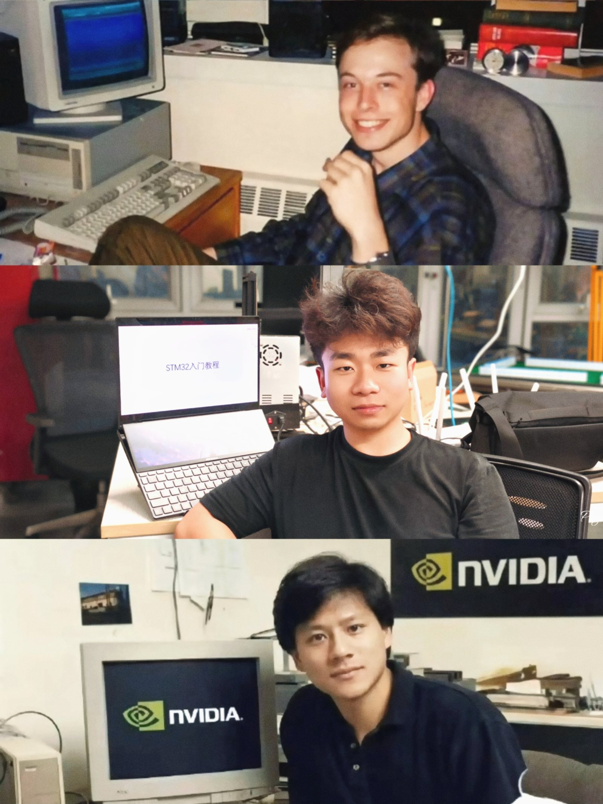
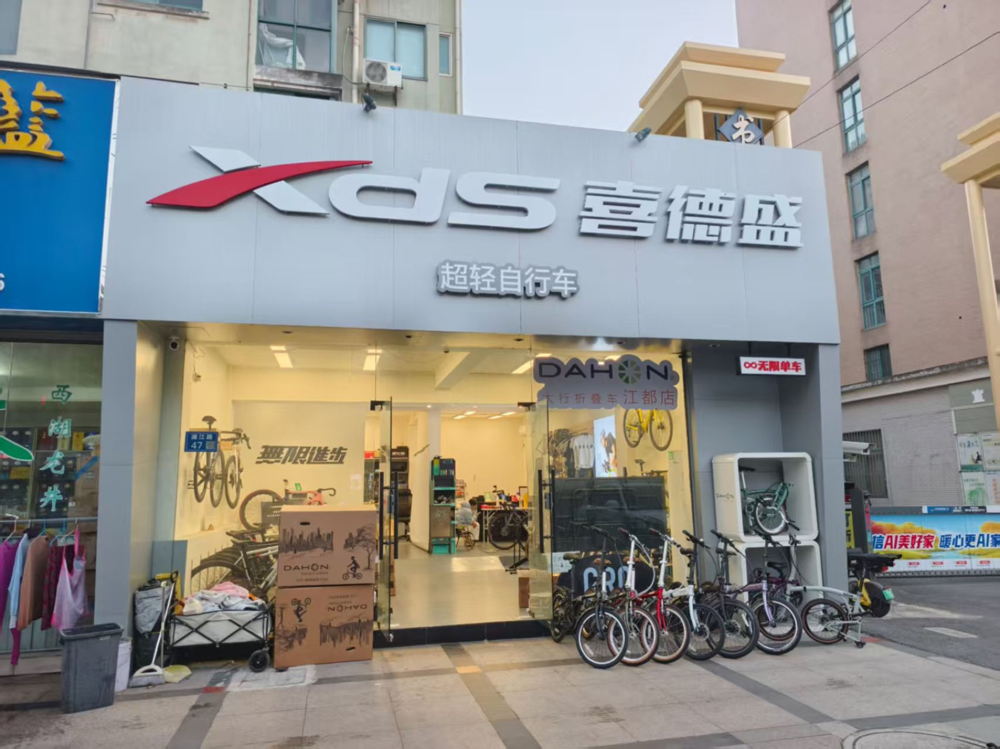
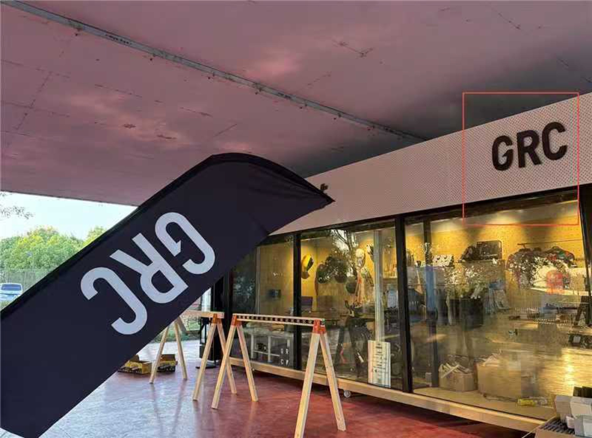
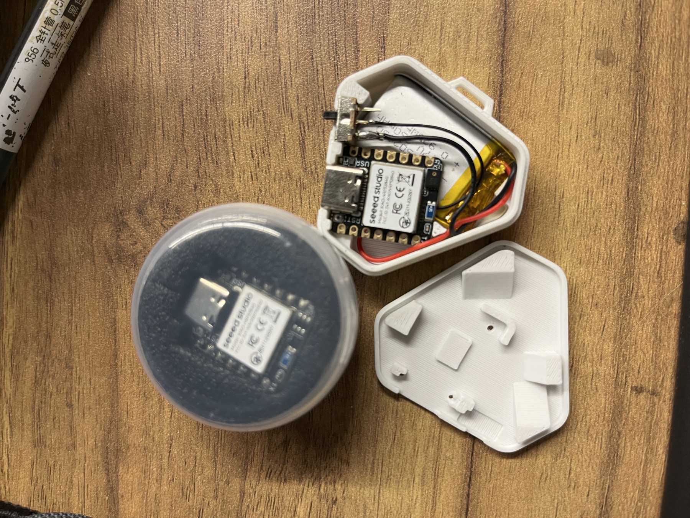
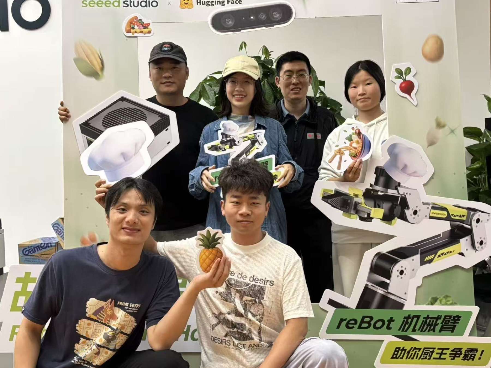
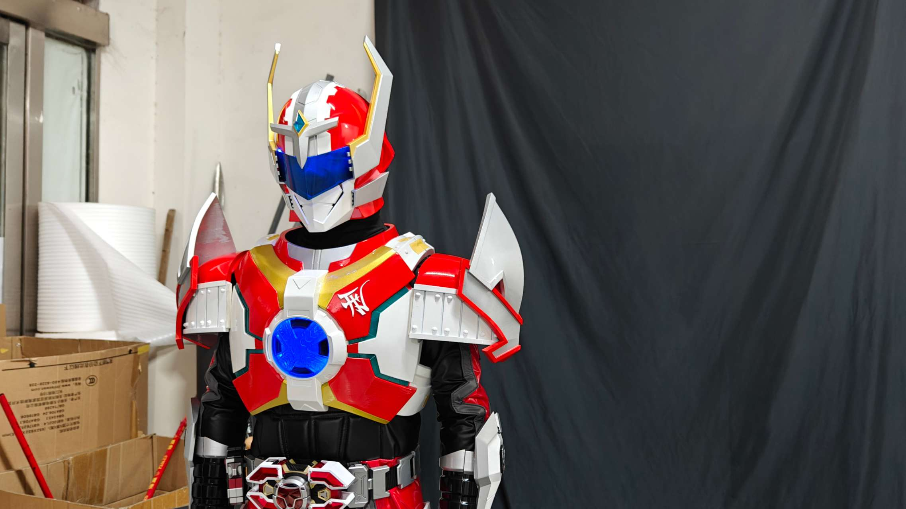
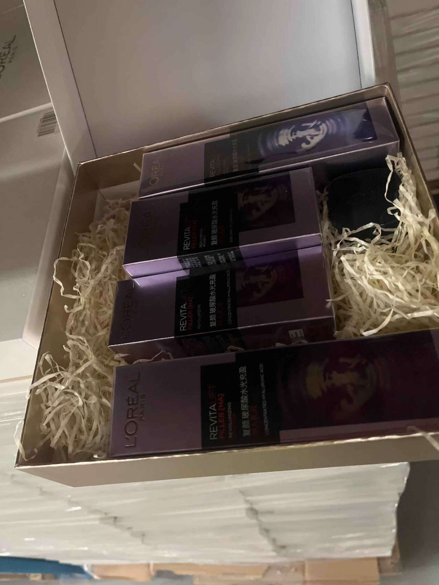
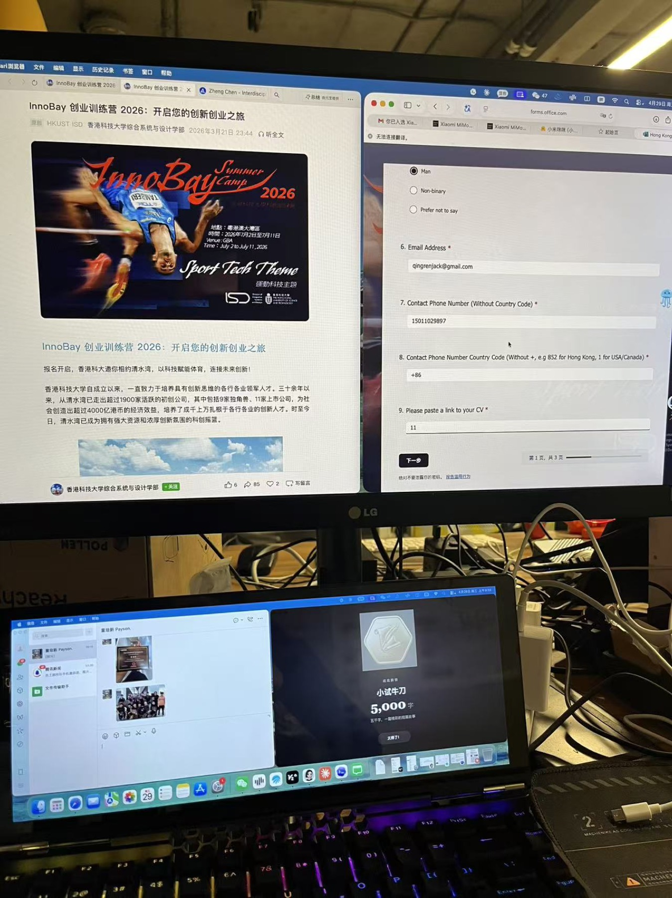

XbotPark 在孵项目联创
我是童培新，一个从零售与社群走进软硬件开发的产品创业者。我关心真实需求，也享受把想法做成可以被触摸、使用和购买的东西。

02 / SELECTED WORK



点击卡片查看详情，不需要继续向下翻。
03 / PROFILE
我的优势不是某个单点技能，而是能从用户与生意出发，进入工程细节，再把技术重新组织成清晰的产品。
运动品牌经销、选品、内容与销售。
自行车门店、服务流程与骑行活动。
嵌入式、AI 软件、硬件原型与品牌产品。



